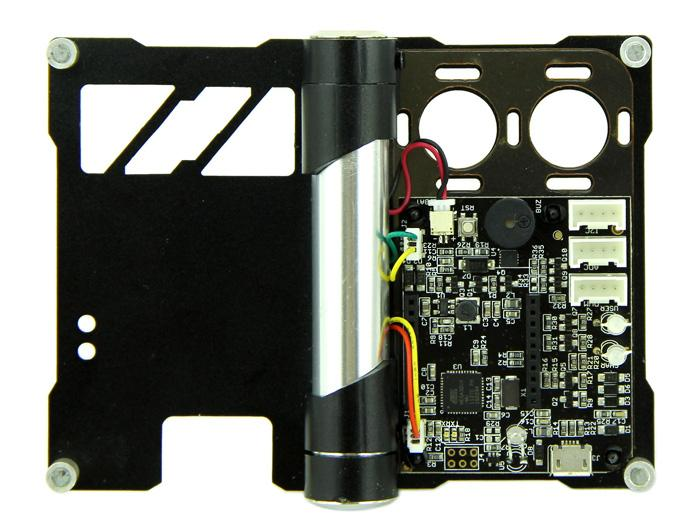
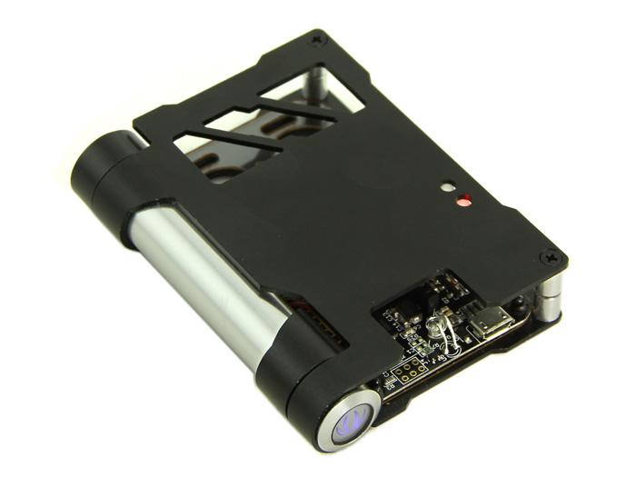
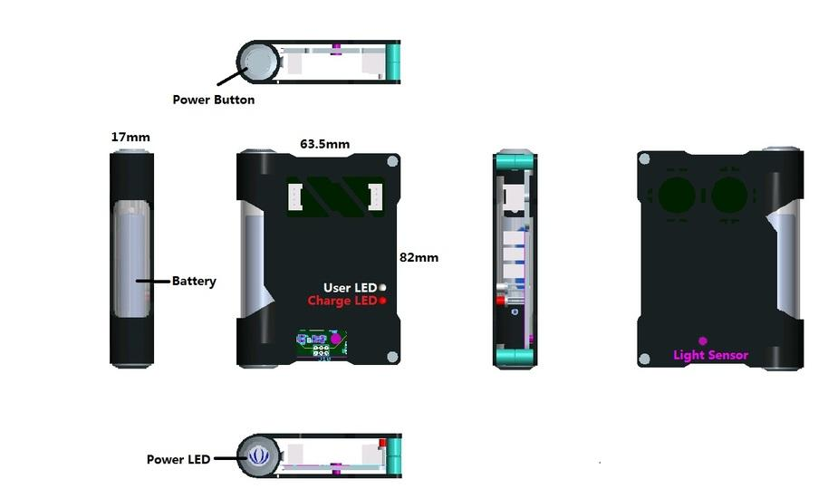
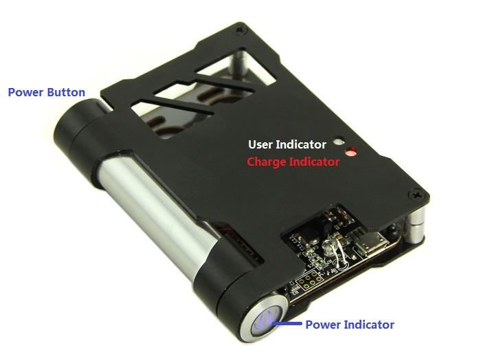
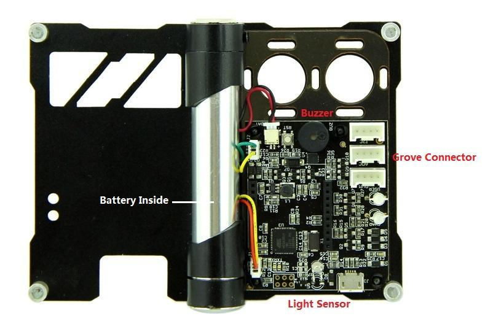
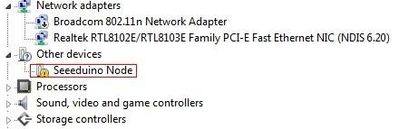

You might want to DIY an alarm system to monitor the soil moisture in your garden. While you are still lying in bed comfortably in the early morning, you might need a device, which automatically opens the doghouse for your doggie to come out and enjoy the warm sunlight. However, the complex software and hardware holds you back. Now, here comes Atom sweeping the road through the thistles and thorns; helping you complete these wonderful homebrew projects.
Atom is a node in internet of things. It can not only work standalone but also coordinate with other devices. Atom is highly expandable and easy to use. Standard Grove interfaces allow connections with different sensors. Atom fulfills tasks intelligently: the abundant data gathered are transmitted to the actuator wirelessly. What’s more fascinating is that you can finish all the tasks by simply setting your Android phone.
Atom features wireless data transmission and mobile monitoring. Equipped with standard Bee interface, Atoms can be connected to XBee, RFBee and Bluetooth Bee to form wireless communication network, which gathers and manages the data automatically. Atom can also upload the data of different sensors to the Cloud, making it convenient to analyze data at all times and places simply through Web browsers.
Model: ARD05313P
 
| Item | Typical | Unit |
|---|---|---|
| USB Supply Voltage | 4.75-5.25 | VDC |
| Quiescent Current(connect RF Bee) | 25~40 | mA |
| GPIO Voltage | 3.3 | V |
| Battery Capacity | 300 | mAH |
| Charging Current | 300-500 | mA |
| USB Interface | MICRO USB | / |
| Working Frequency | 16 | MHz |
| Grove Supply Voltage | 3.3 | V |
| Output Current(Max) | 500 | mA |
| Continuous Working Time(Max) | 22 | h |
| Photosensitive Sensor Response Frequency | 100 | Hz |
| Low Battery Indication | 3.71 | V |
| Photosensitive sensor response frequency | 100 | Hz |
| RF BEE (seeed) Communication Distance(Max) in outdoor | 200 | m |
| Xbee(Xbee) Communication Distance(Max) in outdoor | 30 | m |
| Bluetooth Bee(seeed) Communication Distance(Max) in outdoor | 20 | m |
| Grove Connector | 3(IIC;UART;PWM) | / |
| 20Pin Bee Socket | Compatible Rfbee,Xbee,Bluetooth Bee | / |
| Two-color charge indicator | Green/Red | / |
| Two-color user indicator | Green/Red | / |
| Buzzer Frequency | 2.7±0.3 | K |
Atom Node has sensor/actuator connectors for playing solo. With XBee or other open RF communication modules, It is also ready to talk in versatile networks topology when used in multiple. For example:
1. The first Mode:
In this mode, The sensor and actuator are connected to one Atom Node. Atom Node read the sensor data and determine whether drive the Actuator to execute related actions. Demo 1 in the usage is working in this mode.
2. The second Mode:
In this mode, The sensor and actuator are connected to two Atom Node. Atom Node receive the sensor data which is send by another Atom Node through RFBee and determine whether drive own actuator to execute related actions. Demo 2 in the usage is working in this mode.
3. The third Mode:
In this mode, The sensor is connected to one Atom Node(here we called it as AtomSensor). Other Atom Nodes receive the sensor data which is send by AtomSensor through RFBee and determine whether driver own actuator to execute related actions.
Node solutions are design align with SSG (skin skeleton gut) philosophy.
Gut: electronics inside
Skeleton: An minimal aluminum framework for protection and fixture, leaving enough opening to cater various sensors/actuators
Product Size:82mm*63.5mm*17mm
Material:Aluminum 5052
Finished: Black/Silver Anodized
Highlight Features: Hinge structure
Part Cleanness: Remove all burrs&sharp corners. Clean off all oils,Dirt,or other contaminants

Let's look forward to these prototype...

The system adopts Atmel 32U4 as the main chip. And equipped with standard Bee interface socket for wireless communication. It adopts 3.3V power supply, and the external power interface is Micro USB. When connected with external power source, it will convert to 3.3V through DC‐DC voltage‐adjustable‐circuit(based on chip TD6810),and supply power for the whole system. Meanwhile, 5V power source charge Lithium battery through CN3065 charge manager IC.
U1: Atmel 32U4 IC, a 8-bit AVR Microcontroller;
U3: TD6810-ADJ IC, 1.5MHz 800mA Synchronous Step-Down Regulator Dropout;
U4: CN3065 IC, Charge management chip.
Micro USB: Charge for Lithium Battery and programming.
Charge Indicator: During charging process, the indicator is red; when finish charging, it turns to green. When it’s not connected to external power source or when the battery is in normal state, the indicator won’t light up. When it’s in low‐battery level(do not connect to extern power), it shows red.
User Indicator: Green blinking indicates transmit data, Red blinking indicates initializate. Red light indicates in configuration mode.
Light Sensor: Receive encoded parameters that Android device send.
ADC Connector: Can connect Sensors(is not IIC connector).
PWM Connector: Can connect Actuators(is not IIC connector).
IIC Connector: Can connect Sensors or Actuators(is IIC connector).
Note: A atom node can not connect simultaneously two or more Sensors(Actuators).
Key Feature
- Arduino compatible MCU
- LiPo battery and charger circuit
- LED/LDR for parameter setup
- Sensor/Actuator connector
- XBee compatible socket
- Micro USB cable for programming and power
- Low consumption design
Block Diagram
Hardware design instruction
http://www.seeedstudio.com/wiki/images/1/1b/Beacon_Atom_Hardware_Design_Analysis_.pdf
Atom Node Overview
Now let’s see what Atom Node looks like.
The firmware which have uploaded to Atom Node can driving sensors and actuators. Sensors available for Atom Node:
| ID | Name | Type | Control Mode |
|---|---|---|---|
| 1 | Grove - Button | Sensor | IO |
| 2 | Grove - Tilt Switch | Sensor | IO |
| 3 | Grove - Line Finder | Sensor | IO |
| 4 | Grove - PIR Motion Sensor | Sensor | IO |
| 5 | Grove - Infrared Reflective Sensor | Sensor | IO |
| 6 | Grove - Magnetic switch | Sensor | IO |
| 7 | Grove - Touch Sensor | Sensor | IO |
| 8 | Grove - IR Distance Interrupter | Sensor | IO |
| 9 | Grove - Hall Sensor | Sensor | IO |
| 11 | Grove - Collision Sensor | Sensor | IO |
| 12 | Grove - Moisture sensor | Sensor | Analog |
| 13 | Grove - Light Sensor | Sensor | Analog |
| 14 | Grove - Rotary Angle Sensor | Sensor | Analog |
| 44 | Grove - Temprature Sensor | Sensor | Analog |
| 45 | Grove - Water Sensor | Sensor | Analog |
| 46 | Grove - 80cm Infrared Proximity Sensor | Sensor | Analog |
| 47 | Grove - Infrared Temperature Sensor | Sensor | Analog |
| 48 | Grove - Slide Potentiometer | Sensor | Analog |
| 59 | Grove - Air quality sensor 1.0 | Sensor | Analog |
| 50 | Grove - Electricity Sensor | Sensor | Analog |
| 51 | Grove - Alcohol Sensor | Sensor | Analog |
| 53 | Grove - Sound Sensor | Sensor | IO |
| 54 | Grove – Ultrasonic Ranger | Sensor | IO |
| 81 | Grove - Digital Light Sensor | Sensor | IIC |
| 82 | Grove - Barometer Sensor | Sensor | IIC |
| 102 | Grove - Temperature&Humidity Sensor Pro –T | Sensor | ONE-Wire |
| 103 | Grove - Temperature&Humidity Sensor Pro –H | Sensor | ONE-Wire |
| 110 | Grove - Infrared Receiver | Sensor | IR |
Current it can drive almost all of sensors. It is visible that the firmware is powerful. Actuators available for Atom Node:
| ID | Name | Type | Control Mode |
|---|---|---|---|
| 128 | Grove - Relay | Actuator | IO |
| 129 | Grove - LED | Actuator | IO |
| 135 | Grove - Multi Color Flash LED (5mm) | Actuator | IO |
| 136 | Grove - Variable Color LED | Actuator | IO |
| 137 | Grove - Buzzer | Actuator | IO |
| 138 | Grove - Vibrator | Actuator | IO |
| 201 | Grove - OLED Display 128*64 | Actuator | IIC |
| 202 | Grove - OLED 96x96 | Actuator | IIC |
| 223 | Grove - LED Bar | Actuator | IO |
| 224 | Grove - Infrared Emitter | Actuator | IR |
There is an application program for configuring Atom Node modules. The program is running on Android devices. During the configuration process, the screen area of Android device will flash to transmit encoded parameters to the Atom Node via a light-sensitive transistor. The configuration interface is shown below:
Atom Node is an open-source hardware solution for the Internet of Things, which can support several Grove sensors and actuators to gather physical data and perform certain actions. The Atom Node needs to be configured before being put in use. After configuration, several modules can gather and transmit data wirelessly through RFBee.
We would like to take the temperature sensor as an example to illustrate the use of the Atom Node. Let's try to make this happen: when the temperature exceeds 28 ℃, a buzzer will sound.
Preparatory work:
Using the device, you need at least an RFBee/Xbee (when using only one Atom Node, it is not necessary) and an Android device (the Atom Node does not include it). If you want the Atom Node to work, they are essential. And please make sure the baud rate of the RFBee/XBee is set at 57,600. If not, you need to modify the configuration, using your own method or upload the demo of the Library file:RFBee to RFBee. Then download the application program package:BeaconUI and install on an Android device.
Now using an Atom Node working in IFTTT mode, follow the steps below:
Let’s pause for a while to briefly introduce the interface.
Now let's configure it and set the device name as "temp".
In indie mode, the trigger source should choose the device itself, therefore you should choose "temp" in the drop-down box of "Trigger from". But now there's only a "Null" option. Just ignore this problem. After you see the device name in the device list, you can reconfigure when the device name appears in "Trigger from".
Remember that you have just selected trigger source as Null. You need to reconfigure it.
Using two Atom Nodes working in IFTTT mode, you may follow the steps below:
When configuring the actuator, set the actuator's name. Then choose the trigger source of the actuator in “Trigger from”. We would like to use the previously configured device "temp" to trigger the actuator: therefore we should choose "temp" in the drop-down box of “Trigger from”. There are some other trigger conditions and actions, like “If” and “then” which help you to build a link between a certain condition and corresponding actions. By the way, the “If” values should always follow the data type of the Sensor you used.
| Operate | Status | Function |
|---|---|---|
| Press the power button | Power LED will light(Blue) | Turn on the atom node |
| Press the power button after turn on Atom Node | Power LED is light(Blue),User LED will light(if unpair, User LED is red;After successfully paired,User LED is green and blink) | Enter configuration mode |
| Press the power button when in configuration mode | Power LED is light(Blue),User LED will off | Exit configuration mode |
| Long Press the power button | All LED will off and Buzzer will Sound | Turn off Atom Node |
| Double-click the power button | User Indicator will off or on | Turn on/off User Indicator |
| Four-click the power button | all indicators keep states | Clear data |
| Connect Atom Node to PC using USB cable | Charge LED will light(Charge LED is red in charge, After charging complete,Charge LED is Green), Power LED will light | Charge for Battery or update the firmware |


Now you have completed the firmware upgrade.
Atom_Node_Eagle_File.zip
Atom Node Library
Atom Node firmware
the application program:BeaconUI
Hardware design instruction